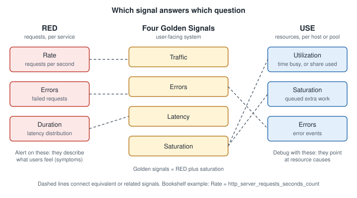

RED, USE & the Golden Signals
|
This content was generated with the assistance of AI and should be verified against the official documentation before being relied on in production. |
Checked on 2026-11-09 against Grafana 13.3.x and Kibana 9.5.x.
A new service exposes hundreds of metrics, and a blank dashboard invites you to chart all of them. Three small, well-known methods answer the question "what do I look at first" so that every service starts from the same few panels and every alert is built on a signal that users actually feel. This page explains each method, where it came from, how they map onto each other, which Bookshelf metrics implement them, and the queries that produce them in Grafana and Kibana. Layout advice for turning them into dashboards is on Dashboard Design Principles, the way these signals become service level indicators is on SLIs, SLOs & Error Budgets, and the vocabulary of metrics is on Metric Types & Aggregation.

The RED method
RED was devised by Tom Wilkie for microservices in 2015 and is described on the Grafana Labs blog. For every service you track three things: Rate (requests per second), Errors (how many of those requests fail) and Duration (how long requests take, as a distribution). Because those three approximate what a user experiences, they suit both dashboards and alerts, and applying the same model to every service means an engineer can read a service they did not write. RED is about services and requests; it says nothing about the machines underneath.
The USE method
USE is Brendan Gregg’s method for resources. For every resource, check Utilization (how much of the time it is busy, usually a percentage over an interval), Saturation (how much extra work is waiting because the resource cannot keep up, typically a queue length) and Errors (a count of error events, including recoverable ones such as retries, which can still hurt performance). The method starts by listing the resources: for a server that is CPUs, memory, network interfaces, storage devices and the interconnects, and software limits such as container caps or connection pools can be treated as resources too. Crossing each resource with each metric type gives a checklist in which unmeasurable cells are marked unknown, so it shows both what was checked and where the blind spots are. USE is quick and finds systemic bottlenecks, and deeper methods follow if it finds nothing.
The Four Golden Signals
The Google SRE book names four signals for a user-facing system: latency (the time to serve a request, tracking successful and failed requests separately because a fast error can pull the average down), traffic (demand, such as requests per second or concurrent sessions), errors (the rate of failing requests, whether explicit such as HTTP 500, implicit such as a 200 with the wrong content, or by policy such as a response slower than a limit) and saturation (how full the most constrained resource is, remembering that systems often degrade before 100 percent utilisation, so rising latency is an early warning). The same chapter makes the distinction that organises everything else on this page: a symptom is what is broken (users get HTTP 500), a cause is why (the database refuses connections). Page mainly on symptoms and use causes as debugging aids. It also explains why averages mislead: a service averaging 100 ms can still serve a slow tail of several seconds, so record latency in buckets and look at a high percentile.
Source: https://sre.google/sre-book/monitoring-distributed-systems/ (sections "The Four Golden Signals", "Symptoms Versus Causes" and "Worrying About Your Tail").
How they map onto each other
The golden signals are essentially RED plus saturation: traffic is rate, errors are errors, latency is duration, and saturation says how close the service is to capacity. USE looks at the same system from below. The practical rule from the RED author is to use both: RED for the service and its users, USE for the infrastructure and shared resources the service depends on. Grafana’s own dashboard guidance says the same thing in operational terms: USE suits hardware and reports causes, RED suits services and reflects user experience, and alerts should be built on RED dashboards.
| Question | RED | Golden signal | USE counterpart |
|---|---|---|---|
How much demand? |
Rate |
Traffic |
Utilization of a shared resource rises with it |
How many requests fail? |
Errors |
Errors |
Errors of a resource (connection failures, retries) |
How slow is it? |
Duration |
Latency |
Saturation shows up as queueing, which becomes latency |
How full is it? |
(not covered) |
Saturation |
Utilization and saturation of CPU, memory, pools |
Source: https://grafana.com/docs/grafana/latest/visualizations/dashboards/build-dashboards/best-practices/ (section "Common observability strategies").
Which Bookshelf metrics implement each
The Bookshelf service is a Spring Boot application instrumented with Micrometer, as described in Metrics and Observability; that page owns the setup, so only the names used below are repeated here. These are the Micrometer metric names as the Prometheus registry renders them.
| Signal | Bookshelf metric (Prometheus name) | Notes |
|---|---|---|
Rate / traffic |
|
One series per |
Errors |
|
Count only server errors for availability; 4xx are usually client mistakes and belong on a separate panel. |
Duration / latency |
|
Present only when percentile histograms are enabled for |
Utilization (CPU) |
|
Fraction from 0 to 1. |
Utilization (memory) |
|
Per |
Saturation (connection pool) |
|
Pending connections above zero mean requests are queueing for the database: a USE saturation signal. |
Saturation (threads) |
|
Busy near max means requests queue in the web server. |
Saturation (GC) |
|
Rising pause time shows memory pressure before OutOfMemoryError. |
Reference: https://docs.micrometer.io/micrometer/reference/ and the Spring Boot metrics page above. The
management.metrics.distribution.percentiles-histogram.http.server.requests=true property enables the _bucket series;
check the property name against the Spring Boot version you run.
Implementing RED in Grafana with PromQL
Each RED panel is one PromQL expression in a time series panel, grouped by uri where you want a breakdown. The
$__rate_interval variable is the Grafana-recommended range for rate() because it adapts to the scrape interval and
the panel resolution; see Variables.
# Rate: requests per second, whole service
sum(rate(http_server_requests_seconds_count{job="bookshelf"}[$__rate_interval]))
# Errors: share of requests that fail with a 5xx
sum(rate(http_server_requests_seconds_count{job="bookshelf",status=~"5.."}[$__rate_interval]))
/
sum(rate(http_server_requests_seconds_count{job="bookshelf"}[$__rate_interval]))
# Duration: 95th percentile latency across all instances
histogram_quantile(0.95,
sum by (le) (rate(http_server_requests_seconds_bucket{job="bookshelf"}[$__rate_interval])))Reference: https://prometheus.io/docs/prometheus/latest/querying/functions/#histogram_quantile and
https://grafana.com/docs/grafana/latest/datasources/prometheus/template-variables/ (the $__rate_interval variable).
The percentile is computed from aggregated buckets (sum by (le)), which is the correct way to combine instances; an
average of per-instance percentiles is not a percentile. Percentile accuracy depends on the bucket boundaries.
USE panels reuse the same machinery over resource metrics:
# Utilization: share of the database connection pool in use
sum(hikaricp_connections_active{job="bookshelf"}) / sum(hikaricp_connections_max{job="bookshelf"})
# Utilization: heap in use
sum(jvm_memory_used_bytes{job="bookshelf",area="heap"}) / sum(jvm_memory_max_bytes{job="bookshelf",area="heap"})
# Saturation: requests waiting for a database connection
sum(hikaricp_connections_pending{job="bookshelf"})
# Saturation: share of web server threads in use
sum(tomcat_threads_busy_threads{job="bookshelf"}) / sum(tomcat_threads_config_max_threads{job="bookshelf"})Reference: https://docs.micrometer.io/micrometer/reference/ for the meter names. The lab’s stand-in emits only
hikaricp_connections_active, hikaricp_connections_max and jvm_memory_used_bytes of these meters, so only the pool
utilization query returns data in the lab; the others need the real Spring Boot application. For the PromQL itself see
PromQL Functions and
Queries, Explore & Drilldown.
Implementing RED in Kibana with ES|QL and Lens
Kibana computes the same numbers from documents rather than from counters, so there is no rate(): you count events per
time bucket. The field names depend on what your pipeline writes. The examples use the span documents that the lab’s EDOT
Collector writes in OTel mapping mode, with the fields @timestamp,
http.response.status_code and duration (in nanoseconds); check them in Discover and adjust to the data you actually
have, because the document shape depends on how the telemetry is sent (see Ingesting Monitoring Data).
FROM traces-*
| WHERE @timestamp >= NOW() - 1 hour AND http.response.status_code IS NOT NULL
| EVAL failed = CASE(http.response.status_code >= 500, 1, 0)
| STATS requests = COUNT(*),
errors = SUM(failed),
p95_ns = PERCENTILE(duration, 95)
BY minute = BUCKET(@timestamp, 1 minute)
| EVAL error_ratio = TO_DOUBLE(errors) / requests, p95_us = p95_ns / 1000.0
| SORT minuteReference: https://www.elastic.co/docs/reference/query-languages/esql (commands STATS ... BY, function BUCKET,
PERCENTILE). The traces-* pattern and the field names match the lab: if your documents differ (APM-style traces-apm* documents
carry transaction.duration.us, for example), only the three expressions change. In a dashboard, use BUCKET(@timestamp, ...) with the dashboard time range parameters instead
of the hard-coded NOW() - 1 hour; see Querying with KQL, ES|QL & PromQL.
In Lens, the same ratio is a formula on a line chart with the date histogram on @timestamp:
count(kql='http.response.status_code >= 500') / count()and the latency panel is a line chart with the metric percentile(transaction.duration.us, percentile=95). Reference:
https://www.elastic.co/docs/explore-analyze/visualize/lens (the Formula section). Saturation comes from host metrics
such as those the System integration collects, for example average(system.cpu.total.norm.pct), which is described on
Infrastructure & Host Monitoring.
Kibana can also query Prometheus-style metrics with PromQL; the status of that feature on 9.5 is on the querying page
linked above. If your lab sends Micrometer metrics that way, the PromQL above can be reused.
Choosing between them
-
Start every service with RED. It needs only the request counter and duration histogram that the framework gives you.
-
Add USE for the resources that can queue: CPU, memory, connection pools, thread pools, disks, queues.
-
Add saturation to the service view when a resource limit is what usually breaks it, which gives you the golden signals.
-
Alert on RED (symptoms), keep USE panels for diagnosis, and keep a cause-based alert only when it gives enough lead time to act before users notice; see Designing Actionable Alerts.
What can go wrong
-
Averaging latency instead of using a percentile hides tail latency; averaging percentiles across instances is wrong.
-
Counting 4xx as errors makes a crawler or a bad client look like an outage. Decide and document what an error is.
-
Using a label with unbounded values, such as a raw URL with ids, in the RED breakdown creates a cardinality problem; see Storage, Retention & Cost.
-
No traffic is not zero errors: a ratio of two zero rates is no data, not 0 percent. Handle it in the alert, as described in Designing Actionable Alerts.
-
A dashboard with only USE panels tells you the servers are healthy while users see errors.
Verify it in the lab
-
Start the lab (see Hands-on Lab) and run the load generator.
-
In Grafana Explore, run the three RED queries and confirm the request rate matches the load generator’s rate.
-
Make Bookshelf fail on purpose with
curl -X POST localhost:8090/mode/failingand watch the error ratio rise in RED. Then switch tocurl -X POST localhost:8090/mode/slowand watch the pool utilization approach 1 as slow requests hold their connections: the symptom appears in RED (duration) and the cause in USE. Return withcurl -X POST localhost:8090/mode/normal. -
In Kibana Discover, run the ES|QL query and compare the
p95_uscolumn with the Grafana percentile; they will differ a little, because the two systems bucket and estimate percentiles differently.
In the books
Hausenblas, Cloud Observability in Action, chapter 2, lists the signal types and the costs and benefits of each, and touches on the origins of these methods; Chapman and Holmes, Observability with Grafana, chapter 8, builds RED and USE dashboards and discusses the golden signals as the basis for service level indicators. Their Grafana examples target Grafana 8 to 10 panel names and Grafana Agent; use the Grafana 13 panels and Grafana Alloy described in this section. Publisher pages are listed in the bibliography of the section index.